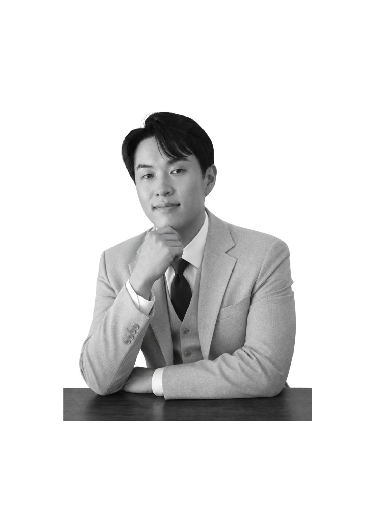
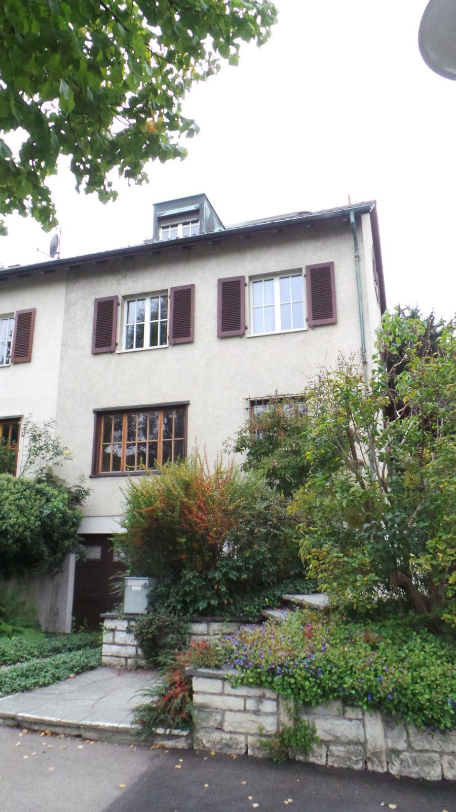
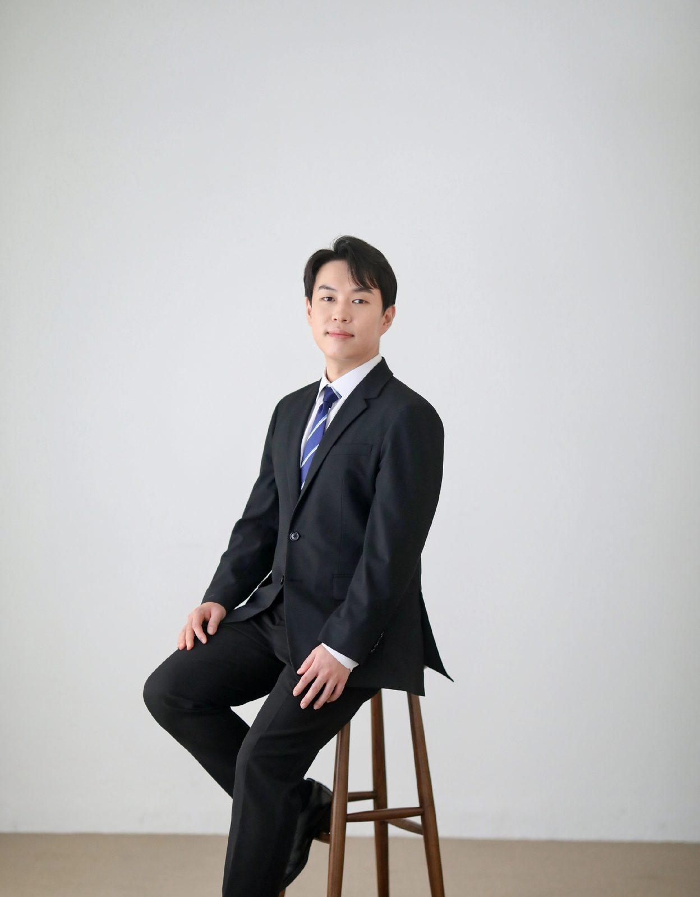
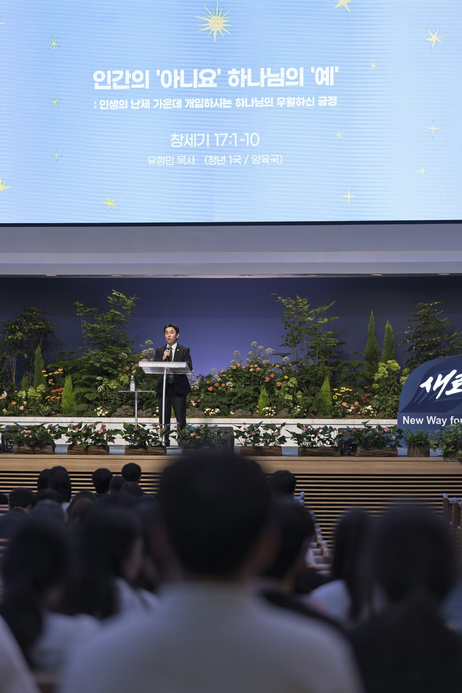
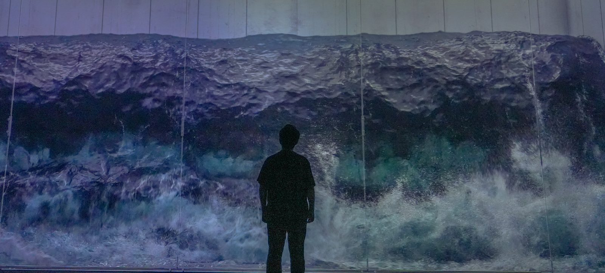
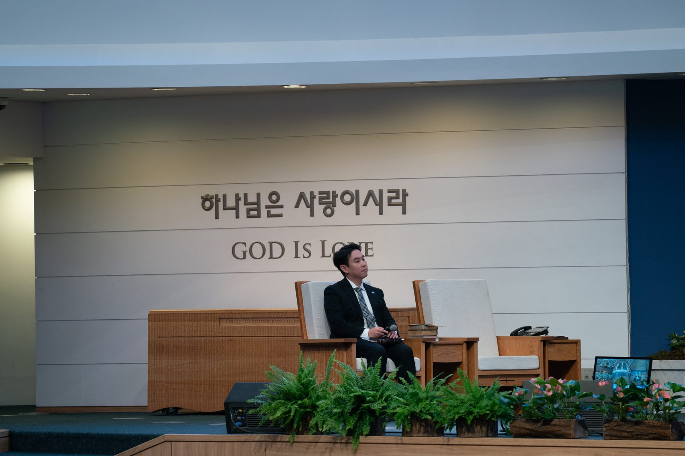
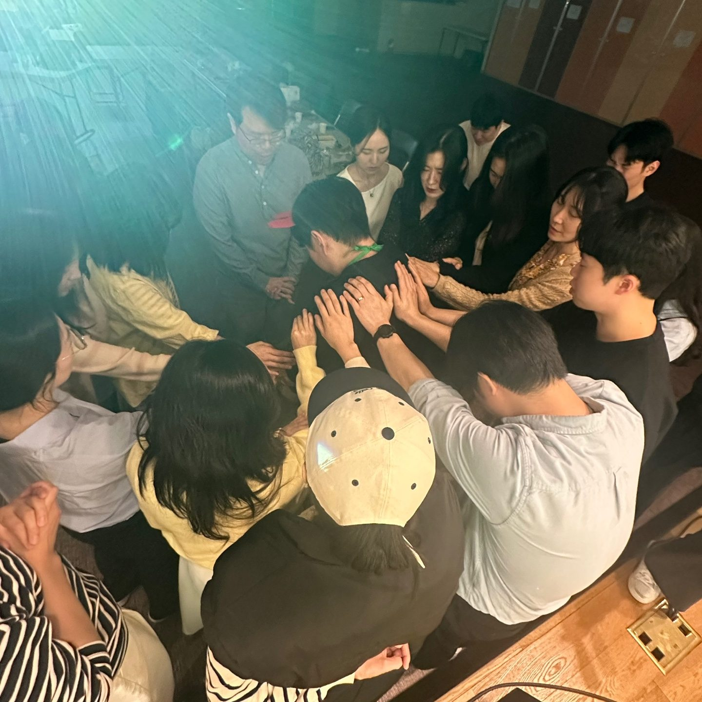
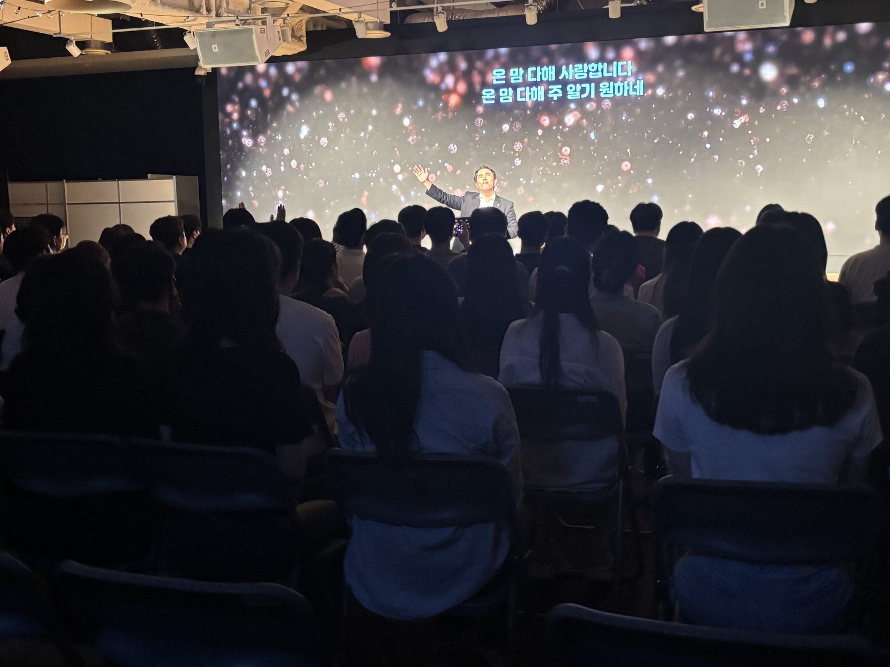
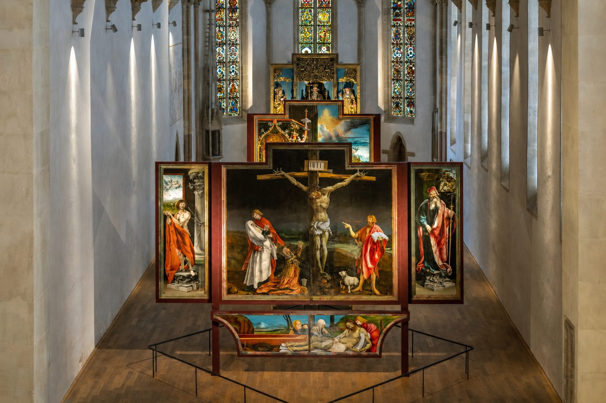
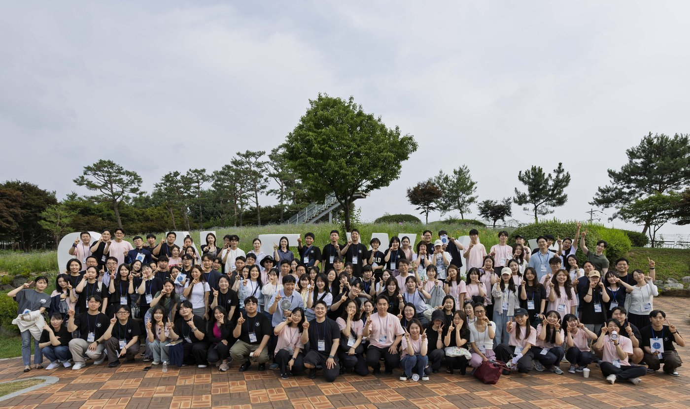

Calling
“많은 사람을 옳은 데로 돌아오게 한 자는
별과 같이 영원토록 빛나리라”Daniel 12:3b

CALLING은 ‘부르심’을 의미합니다. 예수님은 제자들과 처음 만나셨을 때, 제자들을 부르셨습니다. 예수님의 부르심에는 특별함이 있습니다. 그 부르심은 단순한 초대가 아니라, 삶의 방향을 새롭게 여는 위대한 부름이었습니다.
예수님의 부르심 안에는 분명한 목적이 담겨 있습니다. 그것은 한 사람을 예수 그리스도의 제자로 세우고, 그리스도께서 이루어 가시는 사역에 함께 참여하게 하시는 것입니다.
그 사역의 중심에는 복음이 있습니다. 복음만이 사람을 살릴 수 있는 유일한 길입니다. 사명자는 복음의 깊이와 제자도의 본질을 따라 살아가는 삶을 추구합니다.
하나님을 향한 인간의 올바른 생각이 아니라,
인간을 향한 하나님의 올바른 생각을…
Ministry Philosophy — 목회철학
제자는 고도로 정밀한 훈련과 인간의 노력만으로 완성되지 않습니다. 제자의 삶 한복판으로 세차게 밀고 들어오시는 하나님의 계시와 은혜로 가능해집니다. ‘위로부터’는 철저히 하나님 주권에 순종하고 의존할 수밖에 없다는 정신입니다.
제자는 정교한 훈련과 인간의 노력만으로 완성되지 않습니다. 참된 제자의 삶은
삶의 한복판으로 찾아오시는 하나님의 계시와 은혜로부터 시작됩니다.
예수님은 사람이 “거듭나야” 한다고 말씀하셨습니다. 여기서
‘거듭남’은 헬라어 ἄνωθεν(anōthen)으로, ‘다시’라는 뜻과 함께
‘위로부터’라는 의미를 지닙니다. 제자는 아래로부터가 아닌 먼저 위로부터 새롭게 태어난 사람,
곧 하나님의 은혜로 중생한 사람입니다.
위로부터 거듭난 사람은 더 이상 세상의 가치에 속박되지 않습니다. 그는 세상 안에 살지만,
세상이 규정할 수 없는 기준과 소망을 따라 살아갑니다. 그렇기에 참된 제자는 세상이 감당하지
못하는 사람, 세상이 흔들 수 없는 사람으로 빚어지며, “위로부터 난 지혜”(약 3:17)를
통해 거룩한 성화를 이루어갑니다. ‘위로부터’는 철저히 하나님 주권에 순종하며
그분의 은혜에 매달릴 수밖에 없다는 신앙의 고백입니다.
“생사투혼(生死鬪魂)”은 생명을 걸고, 죽음을 각오하는 절박함으로 본질을 끝까지 붙드는 혼신의 자세를 뜻합니다. 이 정신은 “본질에 내 생명을 걸 수 있는가?”라는 물음에서 시작되었습니다. 생사투혼은 인간의 결의를 뜻하는 영웅주의가 아니라, 주님 없이는 단 하루도 살 수 없다는 절박함 속에서 나온 본질에 대한 깊은 매달림입니다.
“생사투혼(生死鬪魂)”은 생명을 걸고, 죽음을 각오하는 절박함으로
본질을 끝까지 붙드는 혼신의 자세를 뜻합니다. 이 정신은 “본질에 내 생명을 걸 수 있는가?”라는
물음에서 시작되었습니다. 주님은 한 영혼을 위해 절박하게 매달리셨습니다.
겟세마네에서 십자가의 사명을 앞에 두신 주님은 “내 마음이 심히 고민하여 죽게 되었으니”
토로하셨습니다. 그러나 그 절망의 심연에서도 “나의 원대로 마시옵고 아버지의 원대로 하옵소서”
고백하셨습니다. 이것은 단순한 체념이 아니라, 아버지의 뜻이라는 본질 앞에 자신의 생명 전부를
내어드린 순종이었습니다. 생사투혼은 단지 인간의 결의를 뜻하는 영웅주의가 아닙니다. 오히려 주님 없이는
단 하루도 살 수 없다는 절박함 속에서 나온, 본질을 향한 깊은 매달림입니다.
“복음적 세계관”은 세상을 단순히 바라보는 관점이 아니라, 하나님의 계시와 복음의 빛 아래에서 모든 현실을 해석하고 살아내는 신앙의 눈입니다. 우리는 시대정신에 무비판적으로 끌려가는 존재가 아니라, 구속사라는 하나님의 큰 역사 속에서 삶의 방향을 분별하는 제자입니다. 복음적 세계관은 생각의 장식이 아니라 삶의 뿌리입니다.
복음적 세계관은 세상을 바라보는 단순한 관점이 아닙니다. 하나님의 계시와 복음의 빛 아래에서
모든 현실을 해석하고 살아내는 신앙의 눈입니다. 제자는 세상의 흐름과 시대정신에 무비판적으로
끌려가는 사람이 아니라, 구속사라는 하나님의 큰 이야기 속에서 삶의 방향을 분별하는 사람입니다.
세계관은 시대와 문화의 변화 속에서 끊임없이 흔들리고 재구성되어 왔습니다. 그러나 우리 주님께서
단번에, 영원히 이루신 구원의 복음은 변하지 않습니다. 오늘날 교회는 “동일한 것이 새롭게 들려진다”는
사실을 기억해야 합니다. 교회는 다른 복음을 말하는 공동체가 아닙니다. 동일한 하나님의 말씀을 오늘의
질문과 상황 앞에서 새롭게 듣고, 새롭게 고백하며, 새롭게 선포하는 공동체입니다.
여기서 “새롭게”란 복음을 현대적 감각으로 포장하거나, 전혀 다른 메시지로 만들어내는 것을
뜻하지 않습니다. 또한 시대적 요구에 맞춰 인간의 창의성으로 복음을 재구성하는 것도 아닙니다. 오히려
하나님의 말씀은 살아 있고 역동적이기에, 그 말씀은 교회 안에서 언제나 새롭게 들려집니다. 우리는
“어제 알았던 하나님을 오늘 또 다시 알아야” 합니다.
오늘날 우리는 그 어떤 때보다 시대적 소음에 시달리며 살고 있습니다. 젠더, 정치, 사회, 이념, 문화의 문제를 둘러싸고 수많은 갈등과 분열을 경험합니다. 이런 현실 속에서 신학적 세계관은 어느 편에 설 것인가의 문제가 아니라 무엇을 붙들고 살아갈 것인가에 대한 진지한 고민이며, 혼란한 시대 속에서도 흔들리지 않는 기준을 붙들게 합니다.
신학은 하나님을 인간이 소유하거나 규정하려는 학문이 아닙니다. 오히려 인간의 한계 안에서 하나님의
말씀에 대해 말하려는 학문적 시도입니다. 그러므로 신학은 “언제나 새롭게 다시 시작”해야 합니다.
신학은 정해진 결론과 내용을 단순히 반복하는 것이 아니라, 새로운 시대 속에서 제기되는 새로운 질문들
앞에서 언제나 새롭게 다시 시작합니다. 또한 새롭게 변화하는 상황 속에서 하나님의 말씀을 세상 가운데
적절하게 말해야 합니다.
오늘날 우리는 그 어느 때보다 시대적 소음에 시달리며 살아가고 있습니다. 정치, 사회, 이념, 젠더,
문화의 문제를 둘러싸고 수많은 갈등과 분열을 경험하고 있습니다. 이러한 현실 속에서 신학적 세계관은
단순히 어느 편에 설 것인가의 문제가 아니라, 무엇을 붙들고 살아갈 것인가에 대한 진지한 고민이자
분별입니다. 신학적 세계관은 혼란한 시대 속에서도 교회가 무엇을 향해 나아가야 하는지를 제시합니다.
“세계 선교의 마무리”는 복음이 아직 닿지 않은 땅과 영혼을 향한 거룩한 책임을 뜻합니다. 교회는 우리의 이웃을 향해 전도하며, 더 나아가 열방 가운데 그리스도의 복음이 증거되기까지 부르심에 응답해야 합니다. 이는 세계가 하나님 나라의 완성을 바라보며 복음의 마지막 주자로 서는 믿음의 헌신입니다.
“세계 선교의 마무리”는 복음이 아직 닿지 않은 땅과 영혼을 향한 거룩한 책임을 뜻합니다.
교회는 우리의 이웃을 향해 전도하며, 더 나아가 열방 가운데 그리스도의 복음이 증거되기까지 부르심에
응답해야 합니다. 주님께서는 ‘모든 민족을 제자 삼고, 아버지와 아들과 성령의 이름으로 세례를
베풀고 분부한 모든 것을 가르쳐 지키게 하라’고 명령하셨습니다.
선교는 선택 가능한 사역이 아니라 교회의 존재 이유와 맞닿아 있습니다. 우리는 가까운 한 영혼을 품는
전도에서 시작해, 복음이 닿지 않은 민족과 세대를 향해 기도하고 보내며 직접 나아가야 합니다. 땅끝을
향한 순종은 먼 곳에서만 시작되지 않습니다. 오늘 내 곁의 한 사람을 사랑하고, 복음으로 섬기며, 열방을
향한 하나님의 마음에 동참하는 자리에서 시작됩니다. 전도와 선교는 하나님 나라의 완성을 바라보며,
교회가 복음의 마지막 주자로 서는 믿음의 헌신입니다.
Gallery — 갤러리









Journey — 걸어온 길
학력
사역
수상